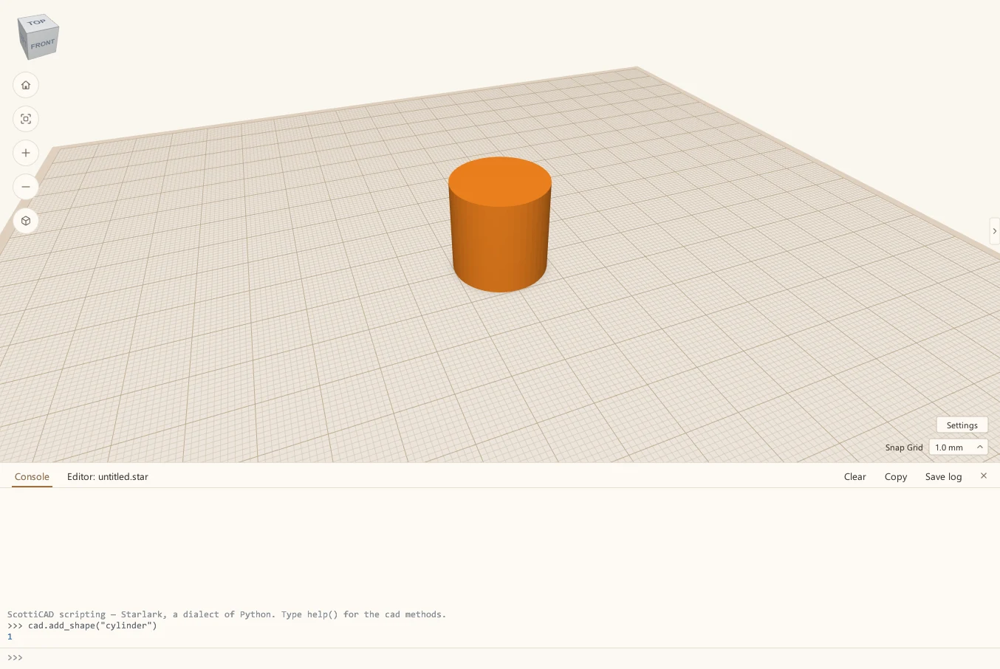
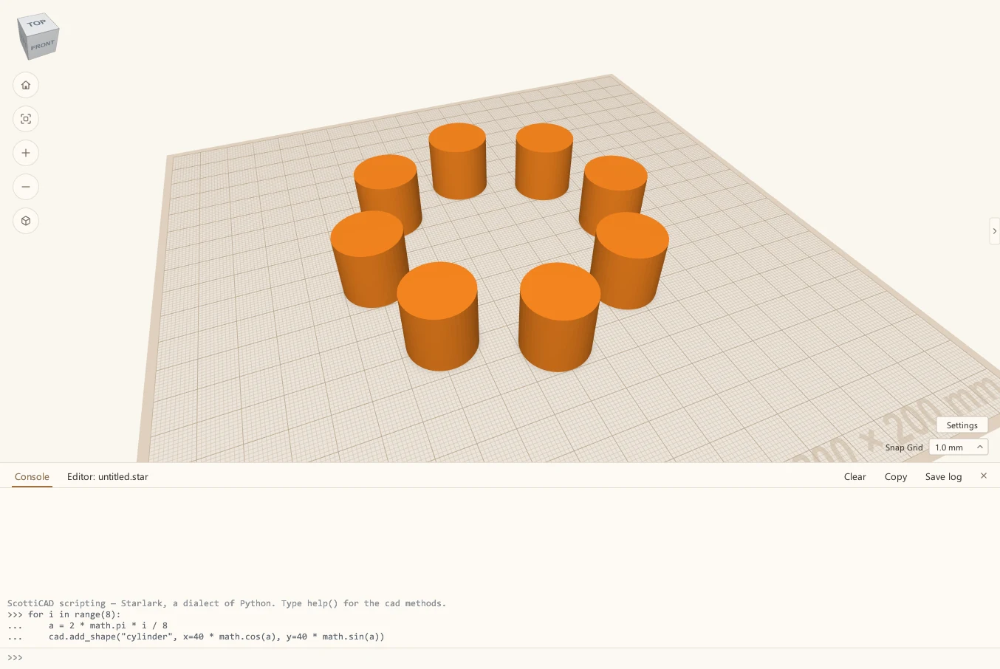
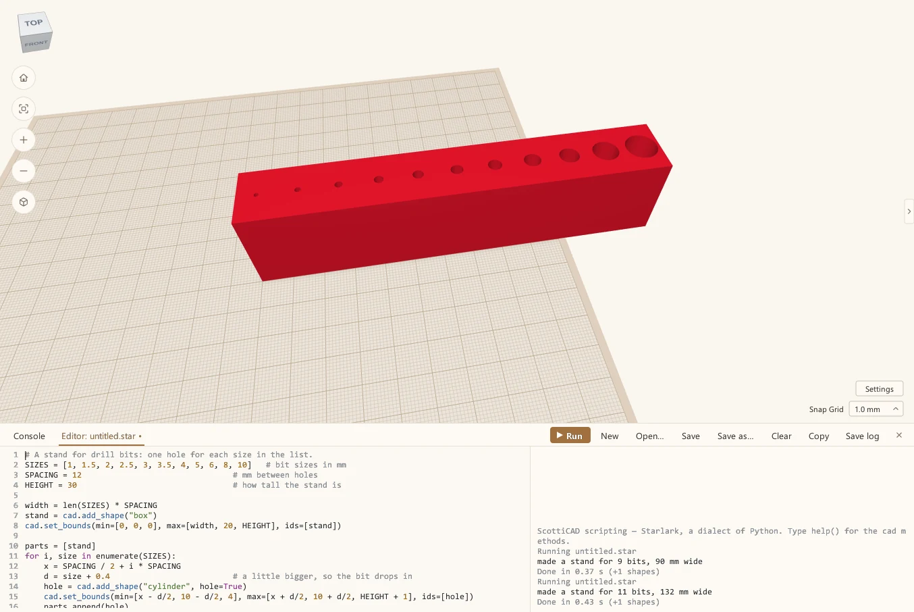

Your first ScottiCAD script
Get started by writing your very first script in ScottiCAD. Its scripting language is a variant of Python with a gentle learning curve that even novices can use to make parametric models.
 Scotti
Scotti
· 5 min read
I'm a programmer, so when I built ScottiCAD I wanted to be able to write code to make a part. You don't have to be a programmer to use it, though. The script automates away the boring repetitive stuff. For example, let's say we want to make a drill bit stand. We need to put a bunch of holes in a row. The size needs to increase from one hole to the next. Now, we can do that manually in ScottiCAD with enough pointing and clicking, but why not just write a script that executes a loop?
This post starts from nothing. If you've never written a line of code, that's fine.
Open the console
Click Scripting at the top right. A panel opens under the 3D view, with two tabs: Console and Editor. The console is where you type one line at a time, at the >>> prompt.
One line
Type this and press Enter:
cad.add_shape("cylinder")A cylinder appears on the build plate, the same as if you'd dragged one in from the shape panel. The console prints a number underneath, 1 if the design was empty. That's the cylinder's id, a number ScottiCAD uses to tell shapes apart. Scripts use it to say which shape to change, as you'll see in the drill bit stand below.

Everything in ScottiCAD's scripting goes through cad. Type help() to see the whole list, or help(cad.add_shape) for just one.
A ring of pegs
Now let's make eight of them in a circle. Type these three lines:
for i in range(8):
a = 2 * math.pi * i / 8
cad.add_shape("cylinder", x=40 * math.cos(a), y=40 * math.sin(a))After the first line, the console indents the next ones for you, because they're inside the loop. So don't type the spaces yourself, or you'll get an indent error. Just type each line and press Enter, then press Enter on an empty line to run it.

The loop runs eight times, with i counting from 0 to 7. Each time it works out an angle, a, an eighth of the way further round the circle, and puts a cylinder 40 mm out from the middle at that angle. math is there ready to use, no import needed.
Change the 8s to 12 and you get twelve pegs. Change the 40 and the ring gets bigger or smaller. That's the whole idea.
A real part: a drill bit stand
The console is good for trying things. For anything longer, use the Editor tab. Here's a stand for drill bits, with a hole for each size in a list:
# A stand for drill bits: one hole for each size in the list.
SIZES = [1, 1.5, 2, 2.5, 3, 3.5, 4, 5, 6] # bit sizes in mm
SPACING = 10 # mm between holes
HEIGHT = 20 # how tall the stand is
width = len(SIZES) * SPACING
stand = cad.add_shape("box")
cad.set_bounds(min=[0, 0, 0], max=[width, 20, HEIGHT], ids=[stand])
parts = [stand]
for i, size in enumerate(SIZES):
x = SPACING / 2 + i * SPACING
d = size + 0.4 # a little bigger, so the bit drops in
hole = cad.add_shape("cylinder", hole=True)
cad.set_bounds(min=[x - d/2, 10 - d/2, 4], max=[x + d/2, 10 + d/2, HEIGHT + 1], ids=[hole])
parts.append(hole)
cad.group("union", ids=parts)
print("made a stand for", len(SIZES), "bits,", width, "mm wide")Paste it into the Editor and press Run (or F5).

Here's what it does, a piece at a time:
- The names in capitals at the top are what we call constants, and they are the settings. I always put the numbers I might want to change up there, where I can find them.
add_shape("box")makes the block.set_boundssays where its corners go:minis one corner andmaxis the opposite one. It's long enough for all the holes.- The
forloop goes through the list.enumerategives you each size and its position,i, which says how far along to put the hole. - Each hole is a cylinder made with
hole=True, 0.4 mm bigger than the bit so it drops in without forcing. It starts 4 mm up, which leaves a floor, and goes right out through the top. groupcuts all the holes out of the block, the same as pressing Ctrl+G.printwrites a line in the console, so you can see what it made.
Change it and run it again
Here's where a script earns its keep. Say I've got 8 mm and 10 mm bits as well, and I want a taller stand. I don't redraw anything. I add two numbers to the list, change the spacing and the height, and run it again.
One thing first, though. Running a script again adds another stand in the same place, on top of the first one; it doesn't replace it. So undo the last run before you run the new one. The whole run comes off in one go. Use the Undo button in the toolbar, or click in the 3D view and press Ctrl+Z. While you're typing in the Editor, Ctrl+Z undoes your typing instead. Alternatively, you can click the drill bit stand and hit the Delete key to delete it.
SIZES = [1, 1.5, 2, 2.5, 3, 3.5, 4, 5, 6, 8, 10]
SPACING = 12
HEIGHT = 30
Save in the Editor keeps the script as a .star file. Next time, open it, change the list and run it. File → Run script runs a saved script without opening it in the Editor at all.
A few things worth knowing
ScottiCAD's scripting language is Starlark, a dialect of Python. If you know Python, you already know most of it. There are no classes, no try, and no import, and a script that makes a part rarely needs them.
Scripts can't touch your files, the network or other programs, except the files you name in a cad call, like cad.save or cad.export. So a script you find online can't do anything nasty to your computer.
If a script has a mistake in it, the error shows up in the console. Click it and the Editor jumps to the line. A script that runs too long can be stopped with Stop or Ctrl+C.
Where to go next
The scripts in ScottiCAD's examples are commented so you can follow along. bit-holder.star is the drill stand's big brother: hex pockets for screwdriver bits, each with its label engraved, all from a list. The plant pot makes a twisted pot from outlines you couldn't easily draw with the mouse. Open one up, change a number, and run it again.
More from Scotti's Corner
- Putting text on your 3D prints 30 October 2026
- Three tools for people who actually print 30 October 2026
- Raspberry Pi mounts that line up the first time 25 October 2026
- How I build a project box 24 October 2026
- Why I wrote ScottiCAD 24 October 2026